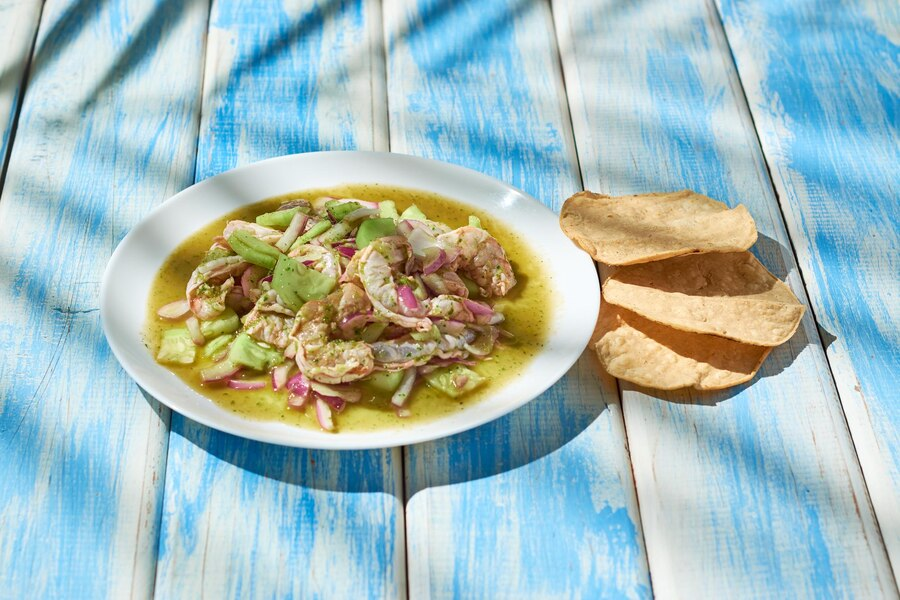

Aguachile

Aguachile is a typical dish in Sinaloa, Mexico. It is prepared with shrimp, cucumbers, lemons, red or white onion, although it has many presentations, it is usually prepared with jalapeños peppers . Its main characteristic is its fresh and spicy flavor.
Ingredients
- 3 Dozen raw medium shrimp
- 3 jalapeños peppers
- 1 Cup of squeezed lemon juice
- 1 Red (or white) onion, cut into slices
- 1 1/2 Cucumbers, small peeled and chopped without seeds
- Salt
- Powdered chiltepin peppers
- Enough avocado to decorate
- Pepper
- 1 Package of toast (optional)
- Mayonnaise (optional)
Preparation
- Clean and peel the shrimp, place them on a glass container or a large plate
- Cut the onion and cucumbers into slices and place on top of the shrimp
- Cut the jalapeño peppers and put them in the blender along with the lemon juice, pour this mixture over the shrimp
- Add salt and pepper
- Put them in the refrigerator for 20 to 30 minutes
- Add the avocado
- Tip: you can put mayonnaise on the toast to intensify its flavor!
Return to homepage